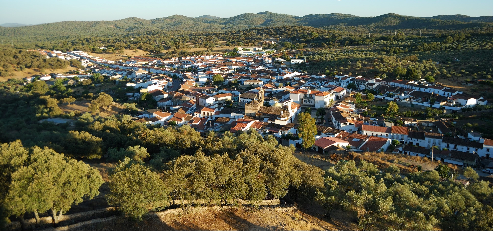

Tengo 19 años, crecí en un pequeño pueblo de la sierra de Huelva llamado Cala, lo que me ha permitido tener una conexión especial con el entorno natural. Entre mis aficiones, me gusta salir a pasear por el campo, jugar al fútbol, disfrutar de momentos con mis amigos y explorar nuevos videojuegos. Mi meta es continuar mi crecimiento tanto en el ámbito académico como profesional dentro del mundo de la informática, estoy comprometido a dar lo mejor de mí para alcanzar mis objetivos.
He estudiado un grado medio de sistemas microinformáticos y redes en el centro IES Martinez Montañes, y realicé las prácticas en una empresa de reparación de equipos tanto de hardware como de software, actualmente me encuentro estundiando en el centro Ilerna Sevilla y haciendo prácticas del permiso de conducir B